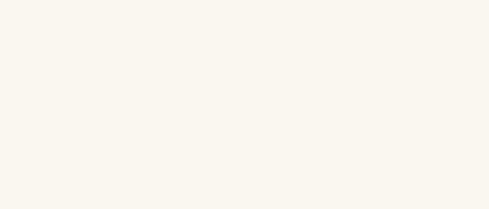

MONTHLY REVIEW OF SCHOLARSHIP
답도 踏道
불교미술·문화유산
연구 성과 월보
도상은 멈춰 있지만, 그것을 보는 사람은 움직인다.
경주 남산리 서삼층석탑 · 동면 야차·용
지난 호
아직 발행한 호가 없습니다.

MONTHLY REVIEW OF SCHOLARSHIP
불교미술·문화유산
연구 성과 월보
도상은 멈춰 있지만, 그것을 보는 사람은 움직인다.
경주 남산리 서삼층석탑 · 동면 야차·용
아직 발행한 호가 없습니다.